<ion-content class="ion-padding">
    <div>
        <progress-bar [progress]="this.progress" [color-degraded]="{'0': '#798A93', '99': '#66BE90'}">
        </progress-bar>
    </div>
    <ion-row class="ion-justify-content-center">
        <div class="question-box">
            <p>{{this.question.question}}</p>
        </div>
    </ion-row>
    <ion-row class="ion-justify-content-center">
        <div class="question-box">
            <ion-row class="ion-justify-content-center" *ngFor="let answer of this.question.answers; trackBy: track; let i=index">
                    <div class="answer-box"
                         [class.chosen-box]="selectedAnswers[i]"
                         [class.wrong]="!rightAnswers[i] && confiremd"
                         [class.right]="rightAnswers[i] && confiremd"
                         (click)="selectedAnswers[i] = !selectedAnswers[i]">
                        <span>{{answer}}</span>
                    </div>
            </ion-row>

        </div>
    </ion-row>
    <ion-row >
        <div *ngIf="multipleChoise && !answered" class="confirm" (click)="confirm()" >
            <span>Confirm</span>
        </div>
        <div *ngIf="!multipleChoise && !answered" class="confirm" (click)="choose(chosenAnswer)" >
            <span>Confirm</span>
        </div>
        <div *ngIf="answered" class="confirm" (click)="initNextQuestion()" >
            <span>Next</span>
        </div>
    </ion-row>
</ion-content>

<ion-footer>
    <ion-toolbar>
        <ion-row class="ion-justify-content-around" (click)="randomQuestion()">
            <ion-button size="small" color="none">
                
            </ion-button>
            <ion-button size="small" color="none" (click)="gesLastQuestion()">
                
            </ion-button>
            <ion-button size="small" color="none" (click)="getNextQuestion()">
                
            </ion-button>
            <ion-button size="small" color="none" (click)="endSession();">
                
            </ion-button>
        </ion-row>
    </ion-toolbar>
</ion-footer>

